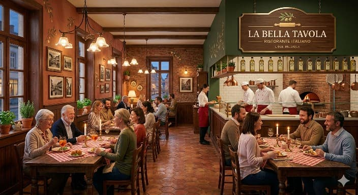

La Bella Tavola
Bienvenue chez La Bella Tavola, restaurant italien familial à Liège depuis plus de 15 ans.
Ici, nous célébrons la cuisine italienne comme à la maison : des recettes traditionnelles, des produits frais, des plats généreux et une ambiance chaleureuse.
Chez nous, chaque assiette raconte l'Italie.
